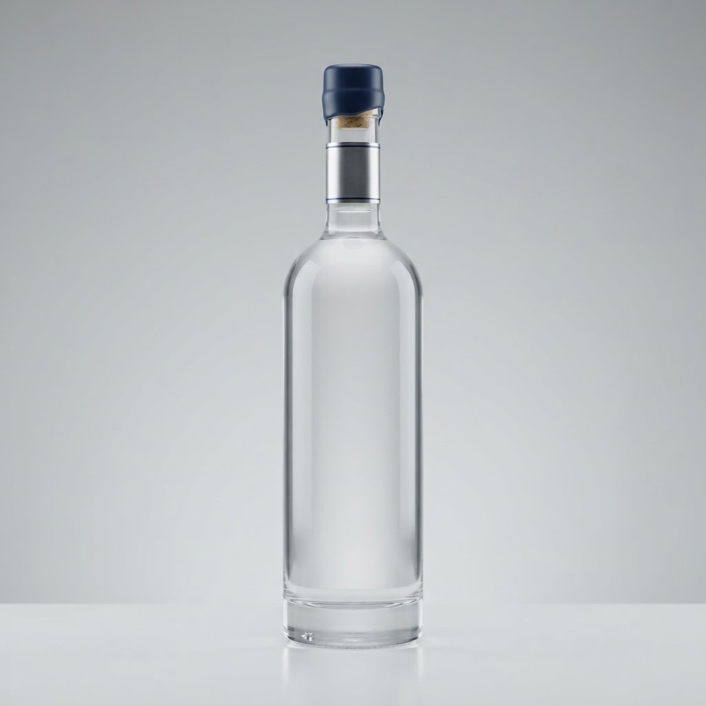
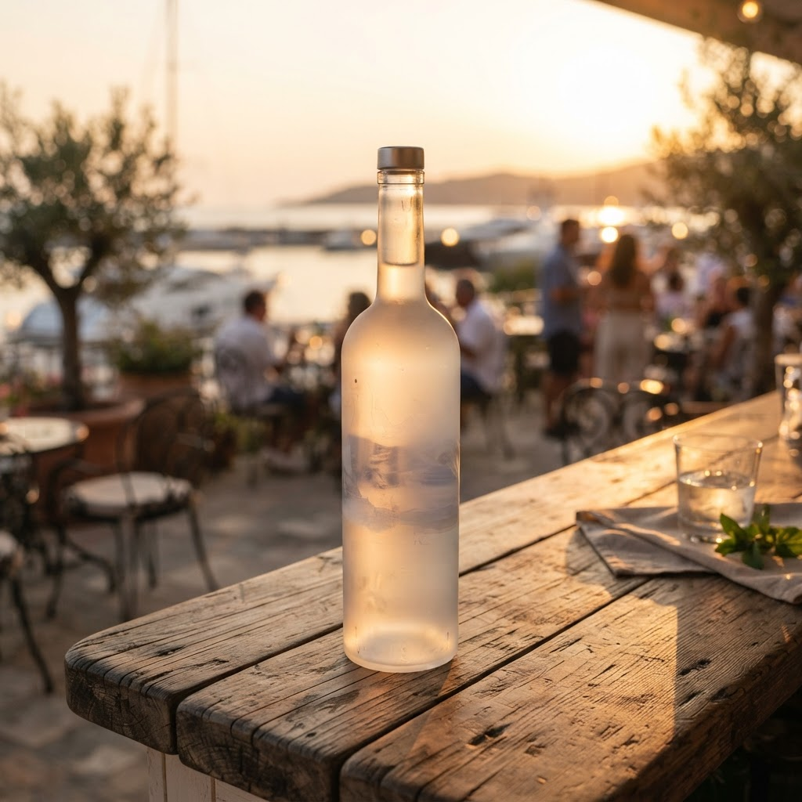

Сколько стоит купить водка русский стандарт 0 в Красногвардейском районе
Красногвардейский район живет в особом ритме, где огни проспектов не гаснут до рассвета. Когда город засыпает, вопрос поиска напитков становится актуальным для многих, и наш сервис берет на себя оперативную доставку за один час прямо к вашей двери.
Сколько стоит купить водка русский стандарт 0 в Красногвардейском районе
Когда заходит речь о том, сколько стоит купить водка русский стандарт 0 в Красногвардейском районе, важно понимать, из чего складывается удобство нашего сервиса. Мы не просто привозим товар, мы обеспечиваем логистическую цепочку, которая работает вне зависимости от времени суток. Процесс устроен просто: как только вы оформляете заказ, наши курьеры, знающие каждый переулок от Охты до Ржевки, немедленно отправляются в путь. Мы строго следим за соблюдением всех правовых норм и возрастных ограничений, поэтому при получении курьер всегда вежливо попросит подтвердить совершеннолетие. Сама механика доставки отлажена до мелочей: система распределяет заявки так, чтобы прибытие заняло не более шестидесяти минут. Это требует четкой координации работы складов и экспедиторов, готовых выехать даже в самый поздний час. Стоимость услуги напрямую зависит от удаленности вашего дома от нашего хаба и текущей загруженности дорог, однако мы всегда стремимся сохранять баланс между скоростью исполнения и доступностью сервиса. Каждая бутылка при перевозке фиксируется в специальном коробе, чтобы целостность упаковки и сохранность содержимого оставались безупречными. Мы исключаем посредников, работая по прямым договорам, что позволяет нам гарантировать подлинность каждой единицы товара. Для жителей Красногвардейского это означает возможность получить желаемое быстро, без лишних ожиданий и потери времени на ночные походы в магазины. Наш мастер-план развития района подразумевает увеличение плотности охвата, чтобы сокращать интервал ожидания до минимума, создавая комфорт для каждого, кто ценит свое время и выбирает качество.
Преимущества доставки в ночное время
Основная задача, которую решает наша логистика — это преодоление ограничений, с которыми сталкиваются жители в ночные часы. Выбирая наш проект, вы получаете не только напиток, но и гарантию того, что вечер не будет испорчен поиском открытых торговых точек. Система работает как точный механизм: оператор принимает заявку, проверяет наличие, а курьер получает оптимальный маршрут в приложении. Мы убрали лишние звенья, чтобы вы могли сосредоточиться на общении с близкими, пока мы занимаемся доставкой. Важно, что все сотрудники проходят обучение по стандартам обращения с клиентами и работы с хрупкими грузами. В условиях плотной застройки района мы используем маневренный транспорт, что позволяет нам оставаться лидерами по времени прибытия. Вы защищены от рисков, связанных с качеством продукции, так как мы тщательно контролируем складские остатки. Каждый заказ — это персональная ответственность компании перед клиентом. Мы понимаем, как важно доверие, поэтому вся отчетность и прозрачность операций являются фундаментом нашего подхода. Стрельцов и партнеры строят культуру ответственного потребления и сервиса, который не подводит, когда ситуация требует быстрого решения. Красногвардейский район меняется, и мы растем вместе с ним, внедряя современные инструменты отслеживания посылок в реальном времени. Это позволяет вам видеть, где находится ваш заказ, и точно планировать свое время.
Можно ли оформить заказ для друга?
Вы можете заказать доставку по любому адресу в пределах нашего района. Главное условие — получатель должен быть совершеннолетним и иметь при себе документ, подтверждающий возраст, чтобы курьер мог завершить передачу товара.
Итог
Итог всегда один: назвать следующий шаг покупателю — оформить заказ и получить его в течение часа в своём районе.
Заказать доставку
Оформите заказ сейчас: привезём за 40-60 минут в любой район Петербурга, круглосуточно.
Призыв
Сколько стоит купить white siberia beluga в Красногвардейском районеКрасногвардейский район не спит, и наши курьеры знают это лучше других, доставляя заказы в течение одного часа даже в глухую полночь. Стрельцов и партнёры га…Сколько стоит petrified fish beluga купить в Красногвардейском районеКрасногвардейский район не спит, и ритм его улиц требует особого подхода к сервису. Наша курьерская служба обеспечивает ночную доставку напитков в течение од…
Сколько стоит где купить водку русский стандарт в Красногвардейском районеКрасногвардейский район живет в особом ритме, где вечерние огни Охты часто сменяются тишиной ночных улиц. Когда запасы иссякают, мы берем на себя заботу о ва…Сколько стоит купить водку русский стандарт платинум в Красногвардейском районеКрасногвардейский район живет своей ночной жизнью, где шум проспектов сменяется тишиной дворов. Когда в полночь наступает потребность в качественном напитке,…